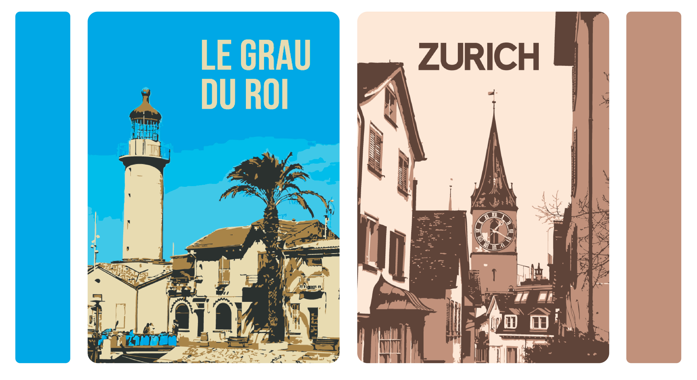
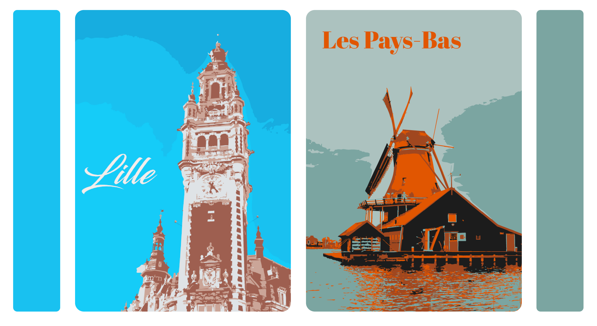

Ce projet personnel est né de mon intérêt pour le voyage et de l’envie de créer des affiches souvenirs correspondant à mon propre univers graphique, lorsque je ne trouvais pas sur place des visuels qui me ressemblaient.

Réaliser une série d’affiches de voyages traduisant mes expériences et mes souvenirs, tout en développant un langage visuel personnel.
Traduire des lieux réels à travers un travail d’aplats de couleurs, en limitant volontairement la palette à trois à six couleurs par image afin de renforcer l’impact visuel et l’harmonie.
Un style inspiré du flat design, enrichi par les irrégularités du réel, pour conserver une dimension sensible et authentique dans les visuels.

Création d'affiches souvenirs correspondant à mon propre univers graphique.
Voir le projet →
Création d’affiches destinée au Musée Zoologique de Strasbourg, réalisée à partir d’un style graphique imposé.
Voir le projet →
Concevoir une marque complète et fabriquer nos produits au Fab Lab, en utilisant différentes techniques comme la découpe laser, le flocage, la gravure et la création de stickers.
Voir le projet →